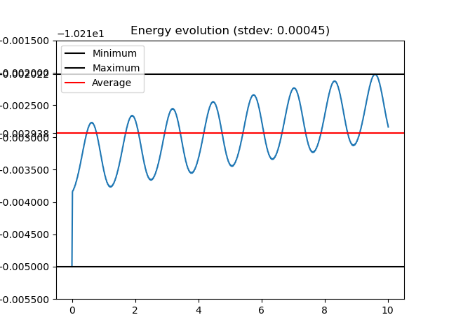

Baumgarte pendulum

Code used for this simulation
import pymech as pm
import numpy as np
# ------------------------
# PARAMETERS
# ------------------------
m = 1.0
g = 9.81
length = 1.5
dt = 0.016
T = 10
# ------------------------
# SIMULATION
# ------------------------
sim = pm.Simulation(gravity=g)
# Fixed anchor
anchor = pm.Particle(
mass=1.0,
pos=(0.0, 0.0),
vel=(0.0, 0.0),
fixed=True
)
mass = pm.Particle(
mass=m,
pos=(0.0, -length),
vel=(3.0, 0.0)
)
sim.addParticle(anchor)
sim.addParticle(mass)
sim.addRod(pm.Rod(anchor,mass, length=length, stiffness=2))
# ------------------------
# RUN
# ------------------------
states, energies = sim.run(
dt=dt,
T=T,
debug=True,
trackEnergy=True,
method="Verlet"
)
# ------------------------
# VISUALIZE
# ------------------------
sim.visualize(states, dt, None, energies)
sim.energyPlot(dt,energies)